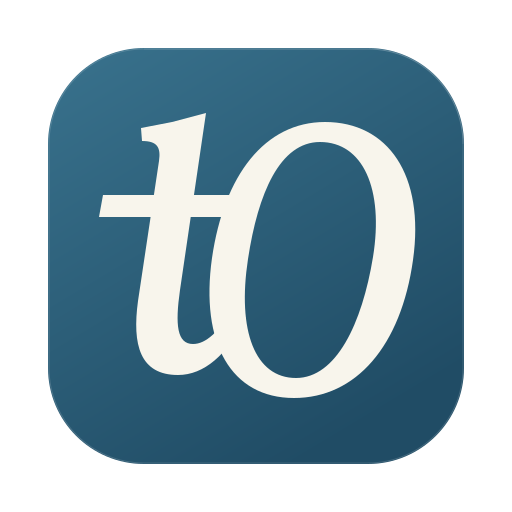

typstOgraphe
Proposition d’identité · Ligature tOLe geste devient signe.
Une ligature dessinée, une encre profonde.
Le « t » rejoint le « O » dans un même mouvement.


Quatre dessins dédiés · pixels calés · exports Retina.
Un signe, trois systèmes.
La silhouette reste commune à toutes les plateformes.
Une seule apparition.
2,1 secondes · tracé, focalisation, arrêt sur tO.
00 — 0,85 sLa plume pose le « t ».
Une descendante souple, puis la traverse qui rejoint le « O ».
0,72 — 1,77 sLe « O » se referme.
Le contour s’écrit tandis que la caméra recule très légèrement.
1,77 — 2,10 sLe signe trouve sa netteté.
La ligature reste immobile. Aucun mouvement en boucle.